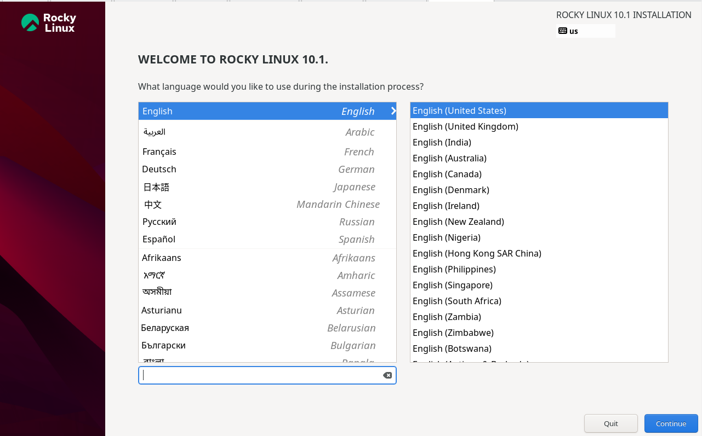
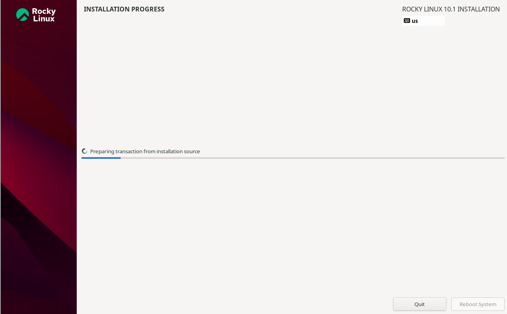
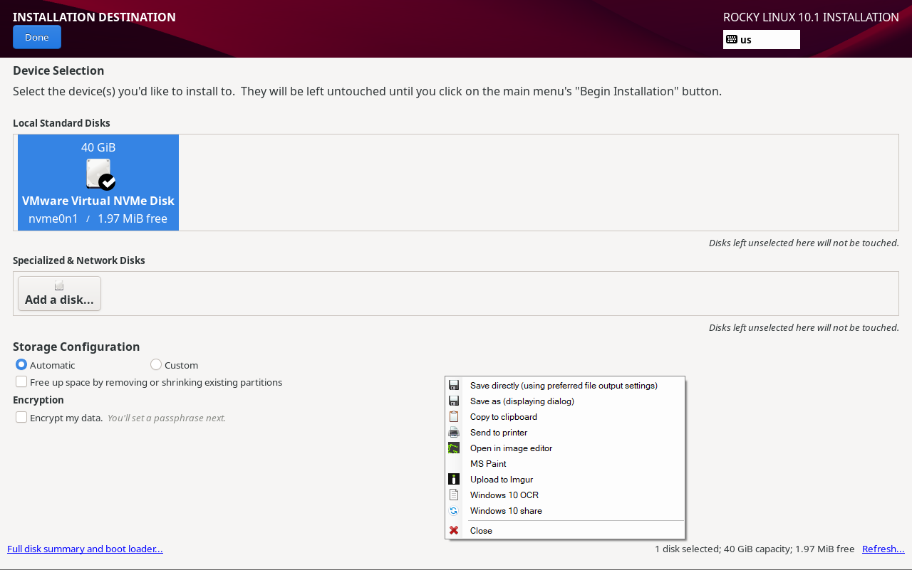
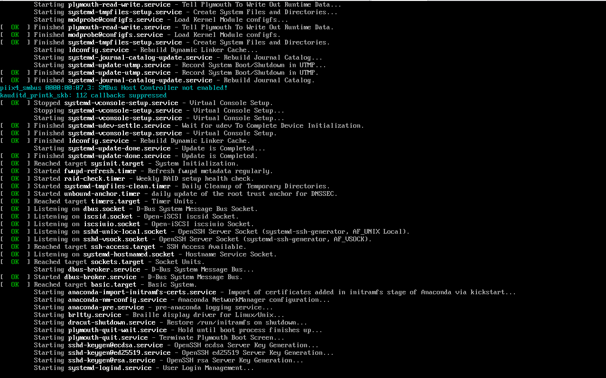
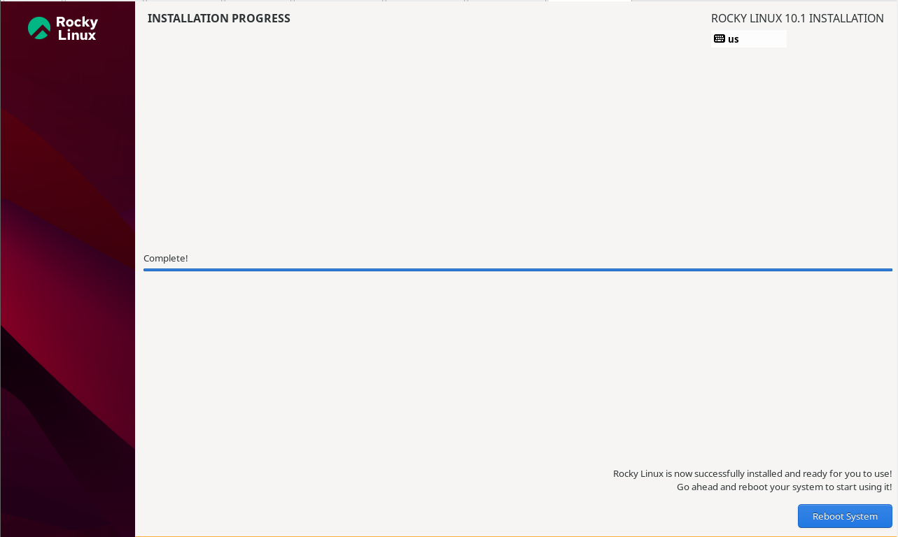
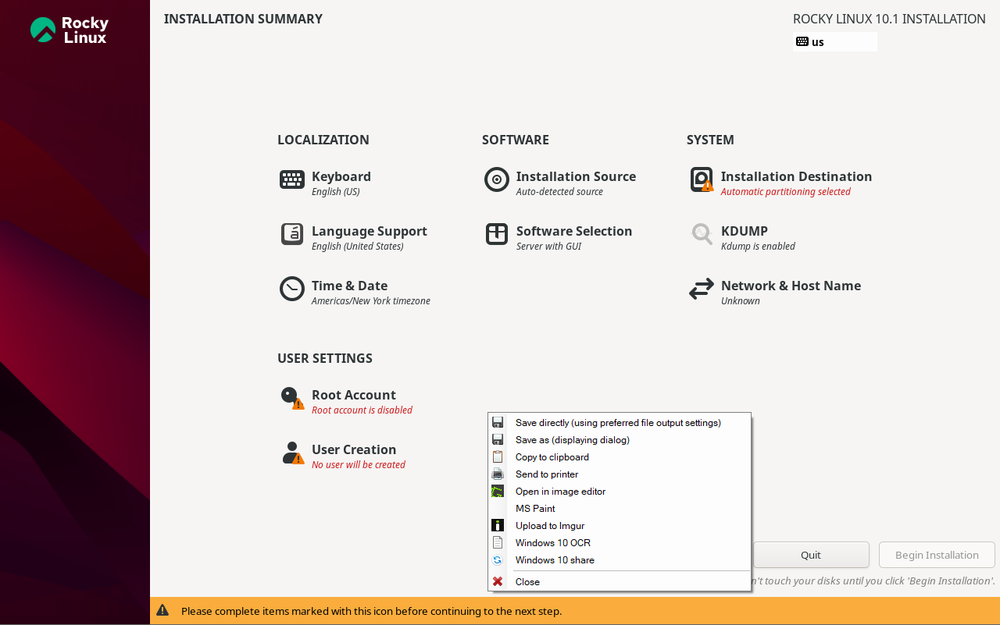
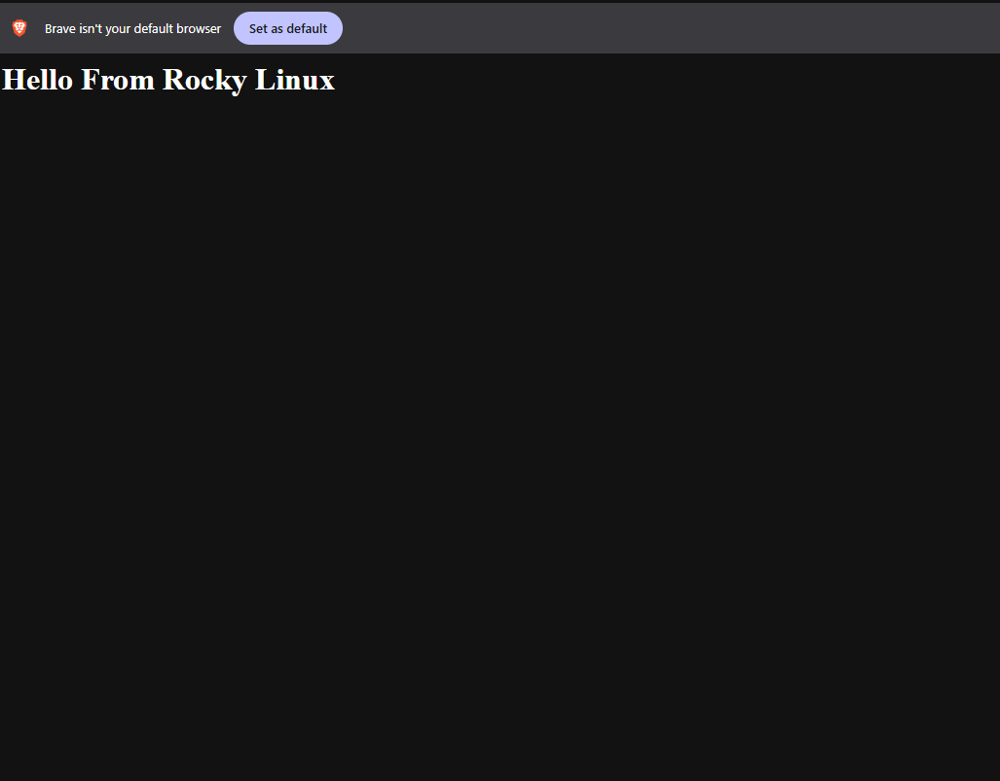
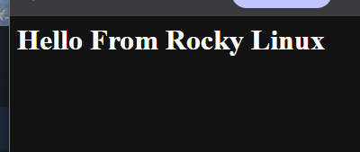
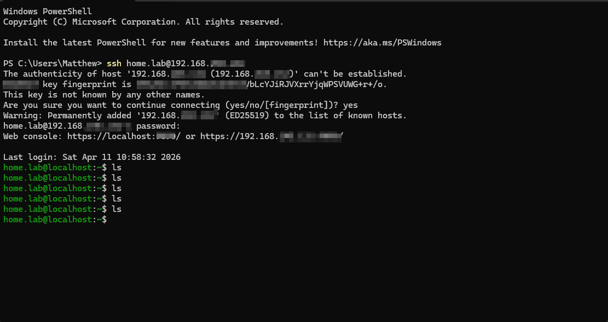

Rocky Linux Server Setup & Remote Administration
Deployed and configured a minimal Linux server using Rocky Linux 10.1 — including networking, web hosting, remote access via SSH, and real-world troubleshooting.
Why Rocky Linux?
Rocky Linux is a community-driven enterprise Linux distribution — a downstream rebuild of Red Hat Enterprise Linux (RHEL). It's widely used in enterprise server environments, making it a practical choice for building real Linux administration skills.
This lab uses a Minimal Install (no GUI) to simulate how real enterprise servers are run — CLI-only, lean, and secure. Everything is done through the terminal.

Technologies Used
VMware Setup & Rocky Linux Installation
1 Language & Installation Summary
Launched the Rocky Linux 10.1 installer inside VMware Workstation. Selected English (United States) as the installation language, then reviewed the Installation Summary screen — confirming keyboard layout, software selection, installation destination, and network settings before beginning.


2 Select Installation Disk
Selected the VMware Virtual NVMe Disk (40 GiB) as the installation destination. Chose automatic partitioning to keep the setup clean and appropriate for a lab environment.

3 Installation in Progress
Started the installation — Rocky Linux packages were downloaded and written to the virtual disk. Chose Minimal Install intentionally to keep the server lean and CLI-only, mirroring how real headless enterprise servers are deployed.


Installation type: Minimal Install (no GUI) Purpose: Simulates real enterprise headless servers Outcome: Fully CLI-based environment for administration
4 First Boot — System Initialisation
After rebooting, watched the system initialise all services via systemd. Useful for understanding which services start automatically — including SSH, networking targets, and core system processes.

Server Configuration & Administration
5 Networking Setup — VMware Bridged Mode
Configured VM networking using Bridged Adapter so the server received a LAN IP address reachable from the host machine. Initially had no internet connectivity — the VM only showed 127.0.0.1 with no usable IP.
ip a # Inspect network interfaces and assigned IPs hostname -I # Quickly retrieve the usable LAN IP nmcli device status # View connection status for all interfaces nmcli device connect <iface> # Activate a network interface
Resolution: Reconfigured VMware to Bridged mode and bound VMnet0 to the correct WiFi adapter. Server then received a valid 192.168.x.x IP and was reachable from the host.
6 System Update & Essential Tools
Updated all installed packages to apply the latest security patches and ensure stability. Then installed essential CLI tools for file editing, downloading, and version control.
sudo dnf update -y sudo dnf install -y vim nano git curl wget bash-completion
7 Web Server Deployment — Apache
Installed and enabled Apache HTTP Server (httpd), then created a test HTML page to confirm the server was accessible from the host machine's browser over the local network.
sudo dnf install -y httpd sudo systemctl enable --now httpd
Created a test page at /var/www/html/index.html and opened it in a browser from the Windows host to confirm it was being served correctly.


8 Firewall Configuration
Opened the firewall to allow inbound HTTP traffic so the Apache web server was reachable from other machines on the network.
sudo firewall-cmd --add-service=http --permanent sudo firewall-cmd --reload
9 Cockpit — Web-Based Server Management
Installed Cockpit, a browser-based management interface for monitoring system health, managing services, and viewing logs — without needing to memorise every CLI command.
sudo dnf install -y cockpit sudo systemctl enable --now cockpit
Accessible at https://192.168.x.x:9090 from the host browser after enabling the service.
10 Remote Access — SSH from Windows
Installed and enabled the OpenSSH server, then connected remotely from a Windows machine via PowerShell. This is how enterprise Linux servers are managed in the real world — no GUI, just SSH.
sudo dnf install -y openssh-server sudo systemctl enable --now sshd # From Windows PowerShell: ssh home.lab@192.168.x.x

Challenges & How I Fixed Them
Real issues encountered during setup — and how they were diagnosed and resolved.
! Issue 1 — No Internet Connection
Problem: dnf update failed due to no network connectivity. ip a showed no valid IP — only the loopback 127.0.0.1.
Fix: Reconfigured VMware from NAT to Bridged mode, bound VMnet0 to the correct WiFi adapter, then activated the interface with nmcli device connect <interface>.
! Issue 2 — Confused 127.0.0.1 with the Server IP
Problem: Initially mistook 127.0.0.1 (loopback/localhost) as the server's accessible IP address.
Fix: Learned to use hostname -I to retrieve the correct LAN IP (192.168.x.x) that external machines can reach.
! Issue 3 — Missing Commands on Minimal Install
Problem: Commands like dhclient were not found — they aren't included in a Minimal Install.
Fix: Used nmcli as the alternative for network management, and installed any missing tools with sudo dnf install <package>.
! Issue 4 — Web Server Not Reachable from Host
Problem: Browser on the host machine couldn't reach the Apache server even after installation.
Fix: Verified Apache was running with systemctl status httpd, then opened the HTTP port through the firewall and confirmed the correct server IP was being used.